| Dr. Lei Zhang | |||||
Professor Visual Media Computing Laboratory School of Computer Beijing Institute of Technology Address: 5 South Zhongguancun Street, Beijing 100081, China Office: Room 820, Centre Building, Zhongguancun Campus Email: 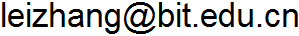 | |||||
Research |
|
Selected publications |
|
| Please email me if you want copies or codes of these papers. | |
| 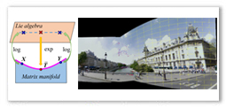 | Image stitching with manifold optimization
Lei Zhang, Hua Huang IEEE Transactions on Multimedia, accepted. |
| 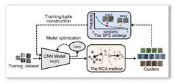 | Progressive unsupervised learning of local descriptors
Wufan Wang, Lei Zhang, Hua Huang ACM Multimedia, 2371-2379, 2022. |
| 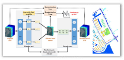 | Stochastic gate-based autoencoder for unsupervised hyperspectral band selection
He Sun, Lei Zhang, Li-Zhi Wang, Hua Huang Pattern Recognition, 132, 108969, 2022. |
| 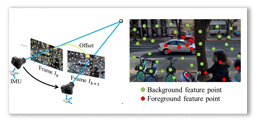 | IMU-assisted online video background identification
Jian-Xiang Rong, Lei Zhang, Hua Huang, Fang-Lue Zhang IEEE Transactions on Image Processing, 31, 4336-4351, 2022. |
| 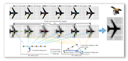 | Robust extraction and super-resolution of low-resolution flying aeroplane from satellite video
De-Lei Chen, Lei Zhang, Hua Huang IEEE Transactions on Geoscience and Remote Sensing, 60, 4700916: 1-16, 2022. |
| 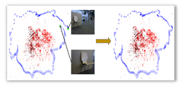 | Loop closure detection by using global and local features with photometric and viewpoint invariance
Ming-Fei Yu, Lei Zhang, Wu-Fan Wang, Hua Huang. IEEE Transactions on Image Processing, 30, 8873-8885, 2021. |
| 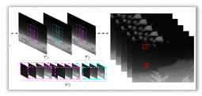 | Small target detection in infrared videos based on spatio-temporal tensor model
Hong-Kang Liu, Lei Zhang, Hua Huang IEEE Transactions on Geoscience and Remote Sensing, 58(12), 8689-8700, 2020. |
| 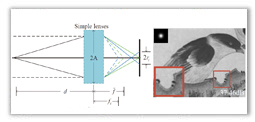 | High-quality blind defocus deblurring of multispectral images with optics and gradient prior
Xiao-Xiang Wei, Lei Zhang , Hua Huang Optics Express, 28(7), 10683-10704, 2020. |
| 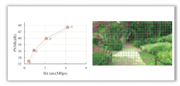 | Encoding shaky videos by integrating efficient video stabilization
Hua Huang, Xiao-Xiang Wei, Lei Zhang IEEE Transactions on Circuits and Systems for Video Technology, 29(5), 1503-1514, 2019. |
| 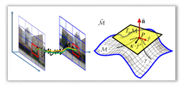 | Intrinsic motion stability assessment for video stabilization
Lei Zhang, Qing-Zhuo Zheng, Hua Huang IEEE Transactions on Visualization and Computer Graphics, 25(4), 1681-1692, 2019. |
 |
Full-reference stability assessment of digital video stabilization based on Riemannian metric
Lei Zhang, Qing-Zhuo Zheng, Hong-Kang Liu, Hua Huang. IEEE Transactions on Image Processing, 27(12), 6051-6063, 2018. |
| 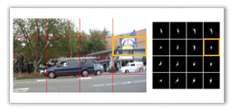 | Bundled kernels for non-uniform blind video deblurring
Lei Zhang, Le Zhou, Hua Huang IEEE Transactions on Circuits and Systems for Video Technology, 27(9), 1882-1894, 2017. |
| 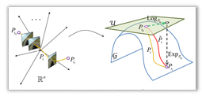 | Geodesic video stabilization in transformation space
Lei Zhang, Xiao-Quan Chen, Xin-Yi Kong, Hua Huang IEEE Transactions on Image Processing, 26(5), 2219-2229, 2017. |
| 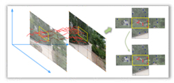 | A global approach to fast video stabilization
Lei Zhang, Qian-Kun Xu, Hua Huang IEEE Transactions on Circuits and Systems for Video Technology, 27(2), 225-235, 2017. |
| 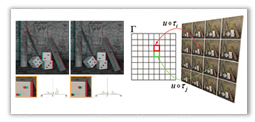 | Efficient variational light field view synthesis for making stereoscopic 3D images
Lei Zhang, Yu-Hang Zhang, Hua Huang Computer Graphics Forum, 34(7), 183-191, 2015. |
| 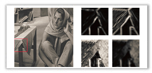 | Guided adaptive image smoothing via directional anisotropic structure measurement
Yu Zang, Hua Huang, Lei Zhang IEEE Transactions on Visualization and Computer Graphics, 21(9), 1015-1027, 2015. |
| 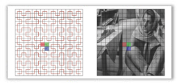 | Efficient structure-aware image smoothing by local extrema on space-filling curve
Yu Zang, Hua Huang, Lei Zhang IEEE Transactions on Visualization and Computer Graphics, 20(9), 1253-1265, 2014. |
| 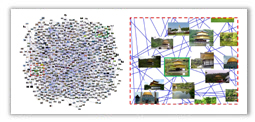 | VideoWeb: space-time aware presentation of a videoclip collection
Hua Huang, Hong Liu, Lei Zhang IEEE Journal on Emerging and Selected Topics in Circuits and Systems, 4(1), 142-152, 2014. |
| 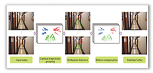 | Multiplane video stabilization
Zhong-Qiang Wang, Lei Zhang, Hua Huang Computer Graphics Forum, 32(7), 265-273, 2013. |
| 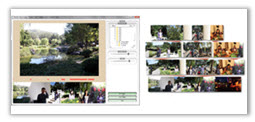 | Hierarchical narrative collage for digital photo album
Lei Zhang, Hua Huang Computer Graphics Forum, 31(7), 2173-2181, 2012. |
| 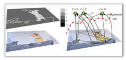 | EXCOL: an extract-and-complete layering approach to cartoon animation reusing
Lei Zhang, Hua Huang, Hong-Bo Fu IEEE Transactions on Visualization and Computer Graphics, 18(7), 1156-1169, 2012. |
| 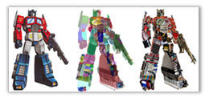 | Arcimboldo-like collage using internet images
Hua Huang, Lei Zhang, Hong-Chao Zhang ACM Transactions on Graphics, 30(6), 155:1-8, 2011. |
| RepSnapping: efficient image cutout for repeated scene elements
Hua Huang, Lei Zhang, Hong-Chao Zhang Computer Graphics Forum, 30(7), 2059-2066, 2011. |
|
| Video painting via motion layer manipulation
Hua Huang, Lei Zhang, Tian-Nan Fu Computer Graphics Forum, 29(7), 2055-2064, 2010. |
|
| 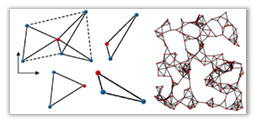 | An as-rigid-as-possible approach to sensor network localization
Lei Zhang, Li-Gang Liu, Craig Gotsman, Steven J. Gortler ACM Transactions on Sensor Networks, 6(4), 35:1-21, 2010. |
| 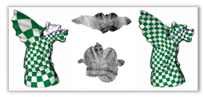 | A local/global approach to mesh parameterization
Li-Gang Liu, Lei Zhang, Yin Xu, Craig Gotsman, Steven J. Gortler Computer Graphics Forum, 27(5), 1495-1504, 2008. |
©2011~2022 Last update: Thursday, 24-November-2022